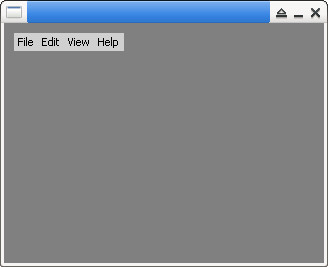

參考資訊：
https://github.com/piyushpandey013/ucGUI
https://github.com/yongzhena/ucgui-linux
main.c
#include "GUI.h"
#include "MENU.h"
#include "FRAMEWIN.h"
int main(int argc, char *argv[])
{
MENU_Handle hMenu = 0;
MENU_ITEM_DATA item = { 0 };
GUI_Init();
GUI_SetBkColor(GUI_GRAY);
GUI_Clear();
hMenu = MENU_CreateEx(10, 10, 110, 18, 0, WM_CF_SHOW, 0, 100);
item.pText = "File";
item.Id = 100;
item.Flags = 0;
item.hSubmenu = 0;
MENU_AddItem(hMenu, &item);
item.pText = "Edit";
item.Id = 101;
item.Flags = 0;
item.hSubmenu = 0;
MENU_AddItem(hMenu, &item);
item.pText = "View";
item.Id = 102;
item.Flags = 0;
item.hSubmenu = 0;
MENU_AddItem(hMenu, &item);
item.pText = "Help";
item.Id = 103;
item.Flags = 0;
item.hSubmenu = 0;
MENU_AddItem(hMenu, &item);
GUI_Delay(3000);
return 0;
}
編譯、執行
$ gcc main.c -o main libucgui.a -IGUI_X -IGUI/Core -IGUI/Widget -IGUI/WM -lSDL $ ./main
